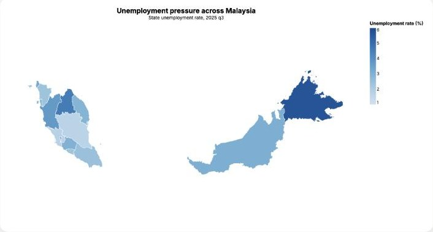

Data storyVega-Lite · 2026
Young Malaysia Under Pressure
How job pressure, living costs and household spending combine differently across Malaysian states. Six questions, each answered with its own charts, ending in a composite state pressure index built from normalised unemployment, CPI change and spending-to-income ratio.
- Charts
- 12
- Datasets
- 7
- Regions
- 15
- Vega-Lite
- JavaScript
- GeoJSON
- data.gov.my
ausafayaz.github.io/young_malaysia_under_pressure
